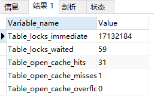
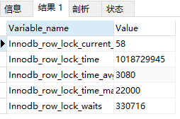

Mysql数据库死锁监控
1）表锁定
通过检查 table_locks_waited 和 table_locks_immediate 状态变量来分析表锁定。
SHOW STATUS LIKE 'TABLE%';

说明：
Table_locks_immediate：能够立即获得表级锁的锁请求次数
Table_locks_waited：不能立即获取表级锁而需要等待的锁请求次数
分析：
如果table_locks_waited值较高，且存在性能问题，则说明存在着较严重的表级锁争用情况。这时，需要对应用做进一步的检查，来确定问题所在，应首先优化查询，然后拆分表或复制表。
2）行级锁
通过检查 Innodb_row_lock状态变量来分析行锁的争用情况。
SHOW STATUS LIKE 'INNODB_ROW_LOCK%';

说明：
Innodb_row_lock_current_waits：当前锁等待的数量
Innodb_row_lock_time：自系统启动到现在，锁定的总时间，单位：毫秒 ms。
Innodb_row_lock_time_avg：平均锁定的时间，单位：毫秒 ms。
Innodb_row_lock_time_max：最大锁定时间，单位：毫秒 ms。
Innodb_row_lock_waits：自系统启动到现在，锁等待次数，即锁定的总次数。
分析：
针对如果InnoDB_row_lock_waits和InnoDB_row_lock_time_avg的值比较高，说明可能存在锁争用的情况，针对 Innodb 类型的表，可以通过设置InnoDB Monitors来进一步观察发生锁争用的表、数据行等，并分析锁争用的原因，如下：
注：可通过语句SHOW CREATE TABLE table_name;查看表table_name使用的引擎(查询输出结果中找到ENGINE=xxxx，这里xxxx即为使用的引擎);
1、先设置InnoDB Monitor
CREATE TABLE innodb_monitor(a INT) ENGINE=INNODB;
2.查看
SHOW ENGINE INNODB STATUS;
说明：
输出结果包含了详细的当前锁等待的信息，包括表名、锁类型、锁定记录的情况等等。打开监视器以后，默认情况下每 15 秒会向日志中记录监控的内容，如果长时间打开会导致.err 文件变得非常的巨大，所以我们在确认问题原因之后，要记得删除监控表(DROP TABLE innodb_monitor;)以关闭监视器。
输出结果为基于一段时间的数据采样，得出的每秒平均值，这里的时间取自系统启动到当前时间的时间间隔或者上次输出到当前时间的时间间隔
找到TRANSACTIONS部分的内容，可以查看事务死锁争用的相关情况
查看锁信息（开启InnoDB监控）
背景
在mysql处理死锁问题时，由于show engine innodb status输出来的死锁日志无任务事务上下文，并不能很好地诊断相关事务所持有的所有锁信息，包括：锁个数、锁类型等。
于是，需要能查看到更详细的事务锁占用情况。
INNODB监控机制(InnoDB Monitors)
mysql提供一套INNODB监控机制，用于周期性(每15钞)输出INNODB运行相关状态(INNODB运行状态、表空间状态、表状态等)到mysqld服务标准错误输出。另外，INNODB标准监控和锁监控，也可以通过命令：show engine innodb status输出到控制台。 此部分内容一般输出到mysql error log里(查找日志位置，参见“补充知识”)。
官方说明(详见参考文档1)如下：
When you enable InnoDB monitors for periodic output, InnoDB writes their output to the mysqld server standard error output (stderr). In this case, no output is sent to clients. When switched on, InnoDB monitors print data about every 15 seconds. Server output usually is directed to the error log (see Section 5.4.2, “The Error Log”). This data is useful in performance tuning. On Windows, start the server from a command prompt in a console window with the --console option if you want to direct the output to the window rather than to the error log.
该类监控机制默认是关闭状态，分析问题需要查看监控日志时再开启。
建议分析问题后，将监控关闭；否则，每15秒输出一次INNODB运行状态信息到错误日志，会使用日志变得特别大。
开启状态监控
INNODB监控机制目前主要提供如下四类监控：
- 标准监控(Standard InnoDB Monitor)：监视活动事务持有的表锁、行锁；事务锁等待；线程信号量等待；文件IO请求；buffer pool统计信息；InnoDB主线程purge和change buffer merge活动。
- 锁监控(InnoDB Lock Monitor)：提供额外的锁信息。
- 表空间监控(InnoDB Tablespace Monitor)：显示共享表空间中的文件段以及表空间数据结构配置验证。
- 表监控(InnoDB Table Monitor)：显示内部数据字典的内容。
关于四类监控开启与关闭方法，一言以蔽之，主要是通过创建系统可识读的特殊表名来完成。特别地，除表空间(InnoDB Tablespace Monitor)监控和表监控(InnoDB Table Monitor)外，其他二类监控还可能通过修改系统参数来完成。
基于系统表的方式和基于系统参数的方式，只要使用二者其中一种方式开启监控即可。
标准监控(Standard InnoDB Monitor)
基于系统表：innodb_monitor
mysql会通过检查是否存在名为innodb_monitor的数据表，来判断是否开启标准监控，并打印日志。
需要开启，则创建表；需要关闭，则删除表。
CREATE TABLE innodb_monitor (a INT) ENGINE=INNODB;
DROP TABLE innodb_monitor;
基于系统参数：innodb_status_output
自mysql 5.6.16版本之后，可以通过设置系统参数(innodb_status_output)的方式开启或者关闭标准监控。
set GLOBAL innodb_status_output=ON;
set GLOBAL innodb_status_output=OFF;
开启锁监控(InnoDB Lock Monitor)
基于系统表：innodb_lock_monitor
mysql会通过检查是否存在名为innodb_lock_monitor的数据表，来判断是否开启锁监控，并打印日志。
需要开启，则创建表；需要关闭，则删除表。
CREATE TABLE innodb_lock_monitor (a INT) ENGINE=INNODB;
DROP TABLE innodb_lock_monitor;
基于系统参数：innodb_status_output_locks
自mysql 5.6.16版本之后，可以通过设置系统参数(innodb_status_output_locks)的方式开启或者关闭标准监控。
set GLOBAL innodb_status_output=ON;
set GLOBAL innodb_status_output_locks=ON;
set GLOBAL innodb_status_output_locks=OFF;
注：前提需要开启 innodb_status_output
开启表空间监控(InnoDB Tablespace Monitor)
基于系统表：innodb_tablespace_monitor
mysql会通过检查是否存在名为innodb_tablespace_monitor的数据表，来判断是否开启表空间监控，并打印日志。
需要开启，则创建表；需要关闭，则删除表。
CREATE TABLE innodb_tablespace_monitor (a INT) ENGINE=INNODB;
DROP TABLE innodb_tablespace_monitor;
注：表空间监控暂不支持通过参数方式配置，并且未来会被废弃。
开启表监控(InnoDB Table Monitor)
mysql会通过检查是否存在名为innodb_table_monitor的数据表，来判断是否开启表监控，并打印日志。
需要开启，则创建表；需要关闭，则删除表。
CREATE TABLE innodb_table_monitor (a INT) ENGINE=INNODB;
DROP TABLE innodb_table_monitor;
注：表监控暂不支持通过参数方式配置，并且未来会被废弃。
注意事宜
监控复位
需要特别注意的一点是：mysql服务重启后，需要重启开启相应监控，才会生效。换句话说，服务重启后，之前配置的所有监控都被复位，处于关闭状态。
基于系统表方式开启的监控，在mysql服务重启后，即使表存在，监控也不会生效。需要重启drop表，再create表，才能使监控生效。
基于系统参数方式开启的监控，在mysql服务重启后，相关系统参数值都是OFF。需要重启设置对应的参数，才能使用监控生效。
错误日志大小
不在停机或重启情况下，mysql每15秒输出一次INNODB运行状态信息到错误日志。
这会使用日志变得越来越大。建议在需要的时候开启，不需要的时候关闭掉。
基于表方式将来会被废弃
基于表方式将来会被废弃，使用基于系统参数的方式开启。
Use INFORMATION_SCHEMA or PERFORMANCE_SCHEMA tables or SET GLOBAL innodb_status_output=ON.
基于表方式无关表结构及内容
基于表方式，mysql只检验表名被创建，则开启监控。
至于，表创建到哪个数据库、表具体的数据结构、表里的内容都不关心，不会对监控开启有任何影响。
日志状态输出时间
虽说状态日志是每15秒周期性输出一次，但是由于状态收集与输出也会占用一些时间，特别是表空间日志(INNODB TABLE MONITOR OUTPUT)和表日志(INNODB TABLESPACE MONITOR OUTPUT)。因此，两次日志时间并不是规律的间隔15秒，而是自上次输出后15秒加上收集输出监控日志的时间。
补充知识
查看错误日志输出位置
mysql root@localhost:test> select @@log_error;
+----------------------------------------+
| @@log_error |
|----------------------------------------|
| /usr/local/mysql/data/mysqld.local.err |
+----------------------------------------+
查看历史日志开启状态与输出位置
mysql root@localhost:test> show VARIABLES like 'general%';
+------------------+---------------------------------------+
| Variable_name | Value |
|------------------+---------------------------------------|
| general_log | ON |
| general_log_file | /usr/local/mysql/data/yerba-buena.log |
+------------------+---------------------------------------+
监控日志解读
详见参考文档2及参考文档5